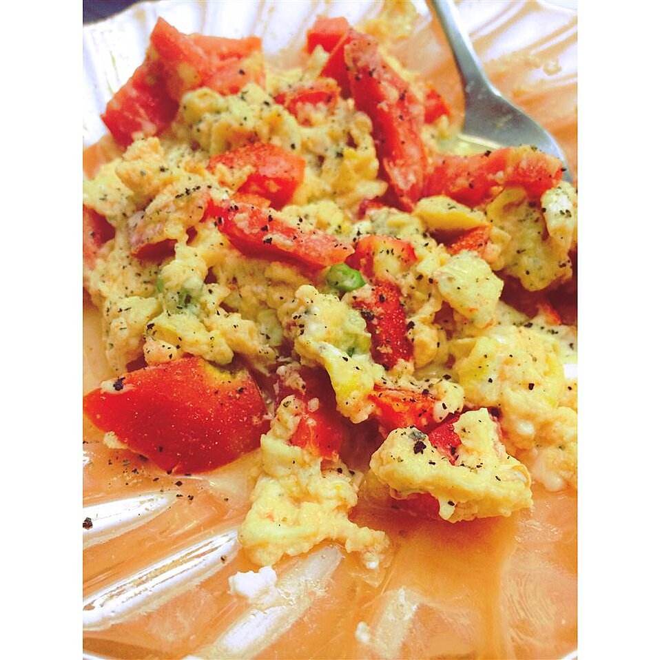

Feta Scrambled Eggs

Description
A very TASTY way to add zip to boring scrambled eggs.
Ingredients
- 1 tablespoon butter
- ¼ cup chopped onion
- 4 eggs, beaten
- ¼ cup chopped tomatoes
- 2 tablespoons crumbled feta cheese
- salt and pepper to taste
Steps
- Melt butter in a skillet over medium heat. Saute onions until translucent. Pour in eggs. Cook, stirring occasionally to scramble. When eggs appear almost done, stir in chopped tomatoes and feta cheese, and season with salt and pepper. Cook until cheese is melted.
Return to main page